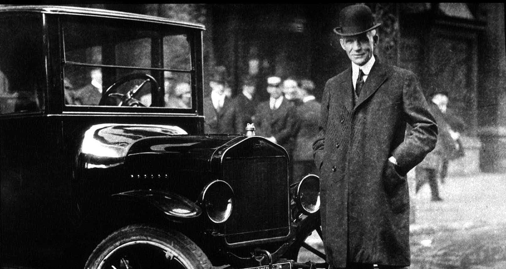
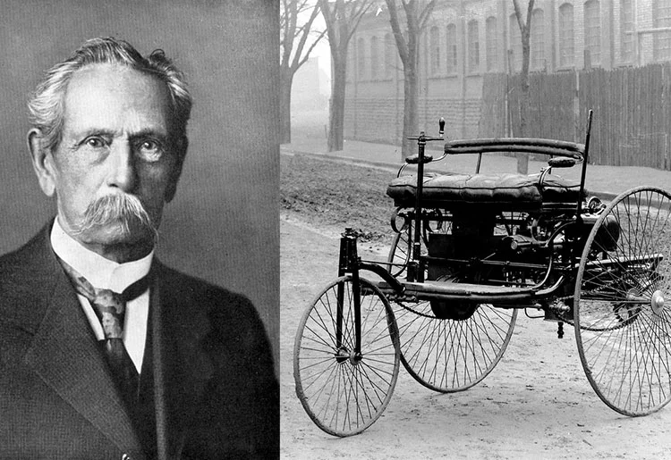
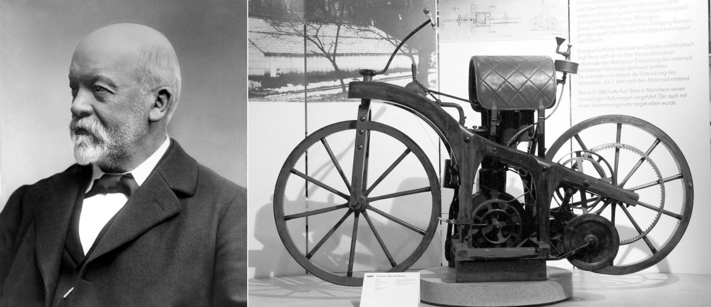

Historical pioneers who laid the foundation of mobility.
The future of mobility has been shaped by inventors, engineers, and business leaders whose innovations transformed transportation across generations.
The future of mobility has been shaped by inventors, engineers, and business leaders whose innovations transformed transportation across generations.



Henry Ford revolutionized manufacturing through assembly line production, making automobiles affordable for everyday consumers.
Karl Benz developed one of the first practical automobiles powered by an internal combustion engine. His work laid the foundation for modern transportation.
Gottlieb Daimler helped pioneer gasoline-powered engines that played a critical role in the development of the automobile.
Breosha Young
Florida A&M University
Computer Information Systems Scholar
Email:Breosha1.young@famu.edu